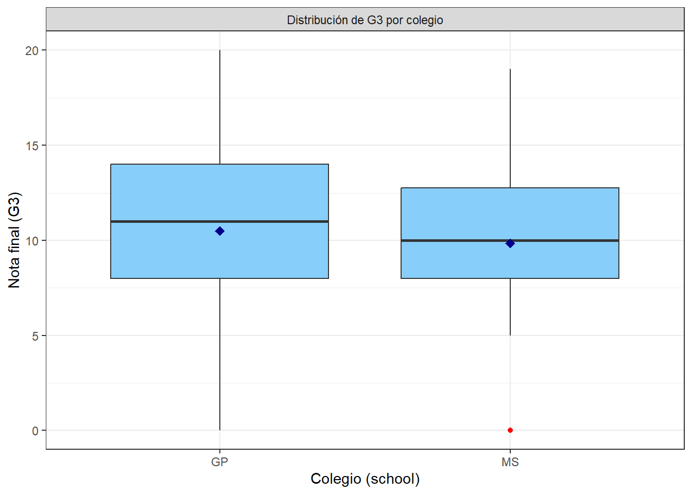

Capítulo 9 Boxplot G3 vs School
datos %>%
ggplot(aes(x = school, y = g3)) +
geom_boxplot(fill = "#87CEFA", outlier.colour = "red", outlier.shape = 16) +
stat_summary(fun = mean, geom = "point", shape = 18, size = 3, color = "darkblue") +
labs(
x = "Colegio (school)",
y = "Nota final (G3)"
) +
theme_bw() +
facet_grid(. ~ "Distribución de G3 por colegio")
9.1 Pequena interpretacion
El gráfico compara la distribución de la nota final (G3) entre los dos colegios (GP y MS). Ambos presentan una distribución bastante similar, aunque se observan pequeñas diferencias:
La mediana del colegio GP es ligeramente mayor que la del colegio MS, lo que sugiere un rendimiento promedio un poco más alto en GP.
La dispersión de las notas es amplia en ambos casos, con valores que van desde 0 hasta cerca de 20, lo que indica diversidad en el desempeño estudiantil dentro de cada institución.
El rango intercuartílico (IQR) es similar entre los dos colegios, reflejando una variabilidad comparable.
Se observa un outlier en el colegio MS, correspondiente a un estudiante con calificación muy baja (posiblemente una nota cero).
La media (punto azul) se encuentra cerca de la mediana en ambos grupos, lo que sugiere que no hay sesgos marcados en la distribución de las notas.